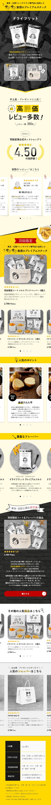

株式会社アンド ザ フリット様 ランディングページ


概要
羽田空港ショッピングサイトに掲載する、株式会社アンド ザ フリットのランディングページを制作しました。サイトの目的
①羽田空港限定商品の購入 ②高評価商品であることの認知
ターゲット
手土産として買いたい。羽田空港限定商品が欲しい。30代～50代男女サイト構成について
パララックススクロールのデザイン依頼のため、ページ冒頭ではキャッチコピーとビジュアルでブランドイメージを直感的に伝え、その後に 『レビュー高評価』『利用者の声』 『羽田限定商品の説明』『商品詳細』 『購入導線』という流れでストーリー性を持たせています。
デザインについて
デザイン面では、ターゲットである30〜50代の男女が“手土産に最適”と感じられるよう、スタイリッシュかつシンプルなレイアウトを意識しました。 配色は、ブランドの公式サイトとトーンを合わせるためにメインカラーに黄色を採用し、信頼感と統一感を演出しています。また、購入導線をわかりやすくするために、アクセントカラーとして赤を用い、ボタンや重要なアクション部分を強調しました。 全体を通して、落ち着いた印象と分かりやすさを両立させることで、手土産としての上質感を伝えつつ、ユーザーがスムーズに購入へ進めるようデザインしています。
使用ツール
XD / Photoshop / Illustrator
制作期間・担当
2025/9
デザイン:13時間
